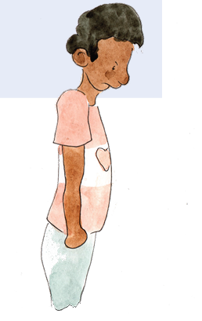
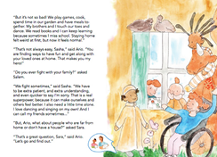
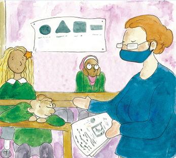

KEY MESSAGE 5 Solving problems
CHAT 5
Let’s CHAT
Being home together all the time, is both wonderful and difficult. First, let’s talk about what’s wonderful. (Parents shares first, saying what’s wonderful for them.)
ASK the children
What’s wonderful for you about us being home together more than ever
Children might say:
-
“It’s wonderful doing my schoolwork with you. It’s only you and me so I can understand everything.”
-
“It’s wonderful to have Dad home and not at work all the time.”
-
“It’s wonderful to stay up late together every night.”
Salem and Sasha talked about family fights. Sometimes families fight when they get angry or frustrated with each other. Other times, they end up fighting when they get tired or bored or just need some time alone. Sasha gave some good advice. She said, the best way to solve problems in her family is to be “extra patient, and extra understanding, and even quicker to say I’m sorry.” I like Sasha’s advice for fixing family fights.
Family fighting always feels bad. We can think together about ways to fix family fights. I have one idea. When we feel angry or frustrated, we move away from each other. We find a separate room or corner to be in and we say, “Please, I need space” and everyone respects this. After about 10 minutes, the fighters check, “Are you ready to talk?”. They wait enough time until both are cool and ready to talk. The fighters then sit together and talk. Each person talks - one by one - and everyone listens. The goal is to solve the problems, so we need to stay positive and not blame or accuse each other. Each person will have to give the other some of what they want to solve the problem. If we stay calm and talk, maybe we can avoid the fight.
ASK the children
What other ideas do you have to fix our problems to avoid a fight?
Children might say:
-
“I like your idea. No one listens to me when I get angry. It makes me angrier.”
-
“My Teacher needs to listen to all sides of a fight not just one kid”
-
“My Mom needs to listen to me when I get angry.”

Let’s CHAT
Sasha’s advice is also good in school. She said, the best way to solve problems is to be “extra patient, and extra understanding, and even quicker to say I’m sorry.” Sometimes children fight in school. It is best if we take Sasha’s advice and avoid fights by being patient and understanding of each other. Let’s remember to listen when someone is angry to understand why. If it is your fault, say “I’m sorry.” If the other person is being unkind or teasing or bullying you, please tell me. Avoid the fight. Tell me, so I can help you to solve it.”
> Read this page of My Hero is You

